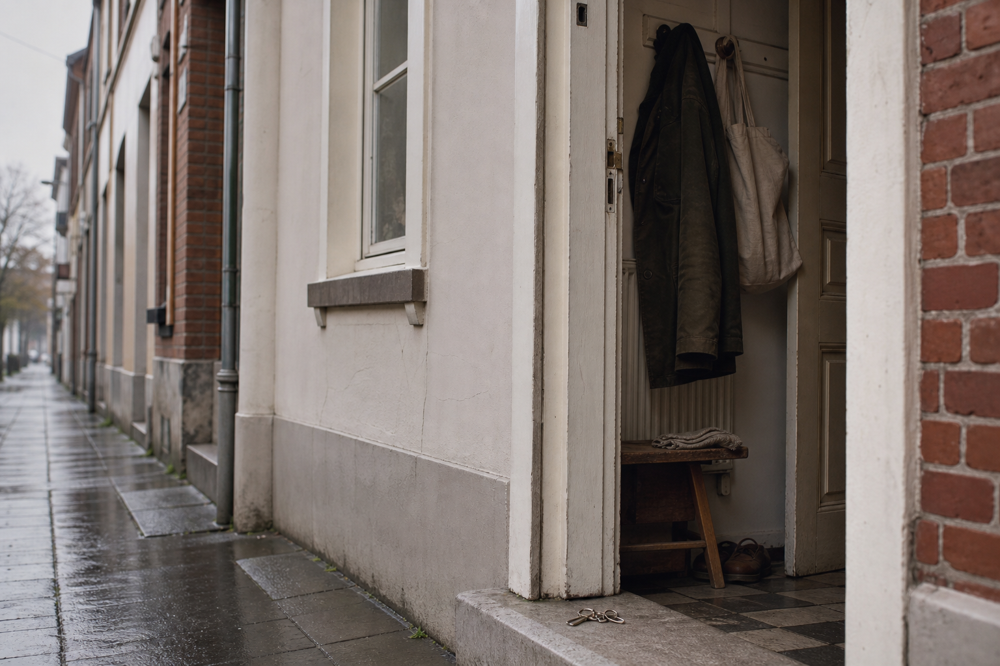
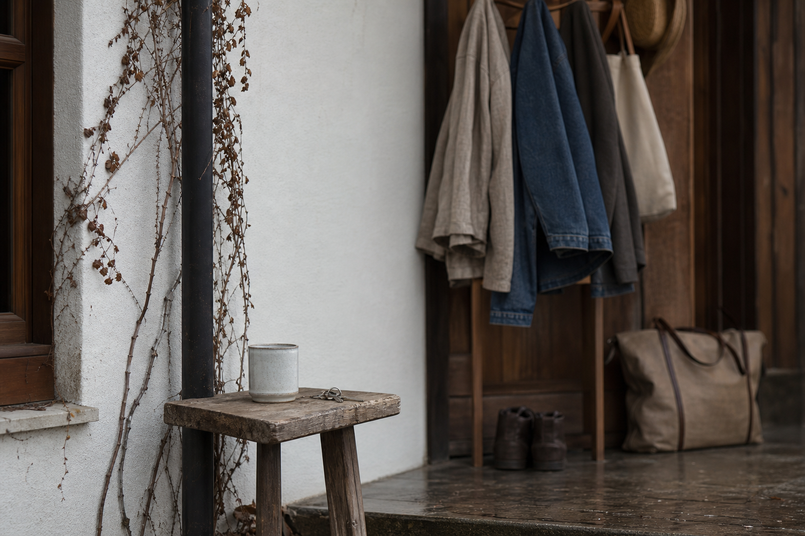
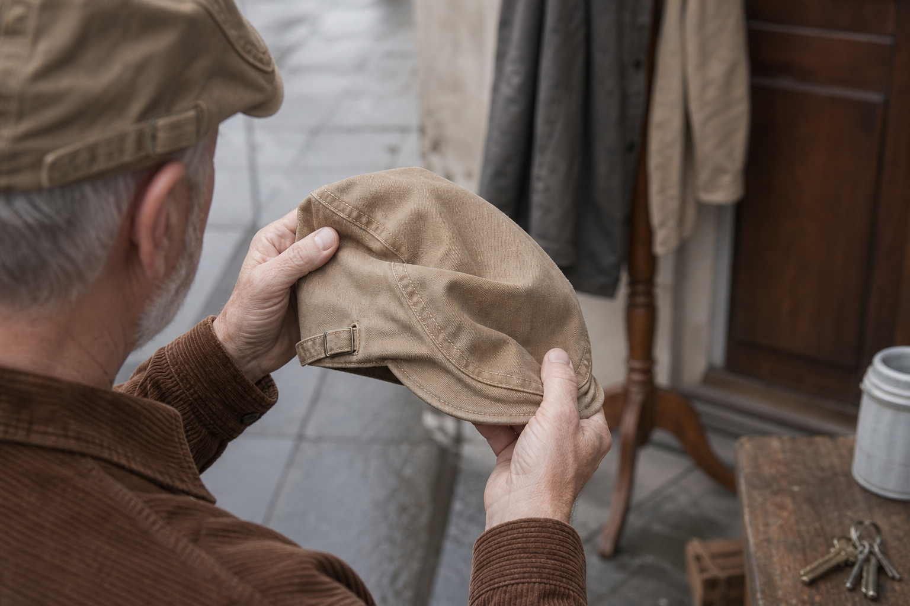
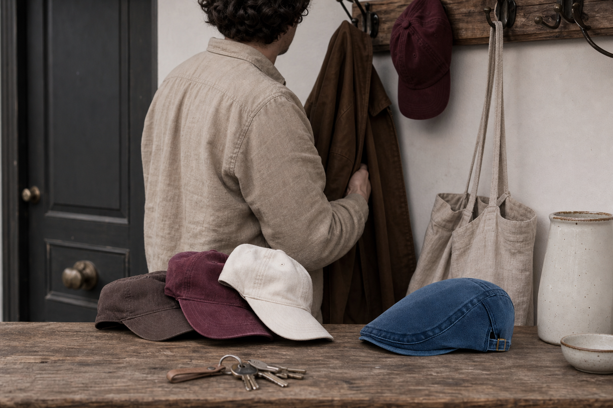
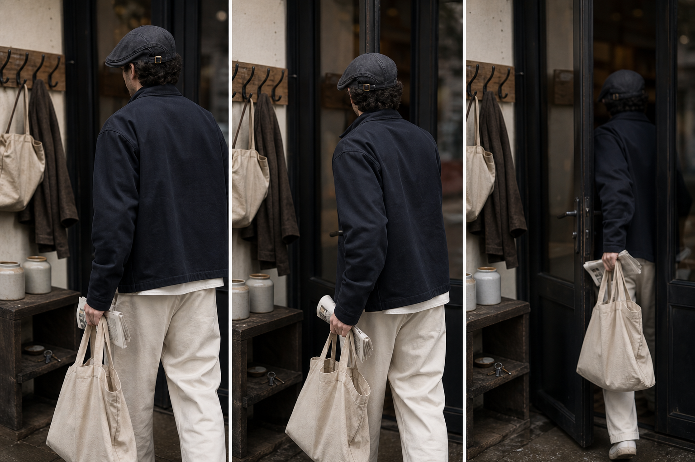

Washed in the piece
Softened before cutting, so the hand is supple from the first wear and the cap doesn't change size on you.
The Washed Denim Collection
One cut, made to fit. Washes to wear all year round.
Nine washed denim flat caps, every one in stock, and a single cut running through all of them. Not nine shapes to choose between. Nine versions of the same shape, which means the only decision left is colour, from an everyday light blue to a burgundy that isn't afraid of colour.
Nothing to measure.
The side-adjuster is set once and stays put, so getting the size wrong isn't really available to you. What is worth understanding before you buy is why one cut works on any head at all, and why that matters more than which wash you pick.
Read on.
$29.99 each. Free worldwide shipping, 100-Day Fit Guarantee.

The anomaly
A cap bought to be worn, and worn only outdoors.
Start with what men actually do, not what they buy. The cap goes on in the car park. It comes off in the doorway, before the coat, before hello, because indoors it suddenly reads as scruffy rather than dressed. So it lives in a pocket through the meal, gets put back on in the street, and after a few weeks of that reflex it stops leaving the shelf at all. He goes out bare-headed and tells himself it's fine.
It isn't the wearing that fails. It's the doorway.
That's the anomaly worth explaining. Same man, same head, same cap: fine on the pavement, wrong at the table. Something about the cap itself changes the moment he's under a ceiling and in front of people. Worth finding out what.
Not the head.
The culprit
Ashcroft started from one observation: men who lose their hair buy caps to cover, and enjoy wearing none of them.
The default choice is a sports cap, and a long peak announces its own job. It sits there like a lid over the eyes, and everyone in the room reads the intention before they read the man. So he takes it off at the door, buys another one, takes that one off too, and eventually walks out bare-headed telling himself it'll do.
Four caps. No wearing.
That's why we didn't try to cover better. We started again from one English shape, a short peak sitting low, in a material nobody was using for it: washed denim. Not a replacement for what you lost. A repair of the line above your face.
"I don't take it off anymore," one customer wrote us. That's the whole brief.
The mechanism, part one
Same head. Two completely different lines above it.
Hold a long peak up to a window and look at it side-on: it's a shelf. It juts out over your eyes and pushes everything under it downward, so the top of your face reads as the dark space beneath an overhang. That's why the sports cap you bought to cover something ended up compressing the one part of your face you wanted left alone.
A shelf, not a fix.
Our peak is short and flat, cut from the same piece as the shell, so there's no hard break where the two meet. It sits low and draws a horizontal line across the top of the face rather than a shadow down it. A frame borders what it holds. That's the whole repair: nothing hidden, the line above your face put back where it belongs.

The second half of the mechanism
A line only helps if it holds. This one holds because of a side-adjuster and a soft shell, not because you keep touching it.
Think of a picture hook. You level it once, and it stays level because it's held at the wall, not because you walk past every hour and nudge it straight. That's the side-adjuster: you set it the first day, and the cap sits where you put it. Impossible to get the size wrong, because there's no size to guess at.
The shell does the rest. A soft crown follows the head without gripping it, so nothing works loose over a morning and nothing leaves a mark by the afternoon.
No adjusting reflex.
Which matters less for how it looks than for what you stop doing with your hands in front of people.
The cloth
Soft on day one, because the shrinking already happened.
Raw denim goes the other way round: stiff first, then it shrinks, then it goes slack. Ours is washed in the piece, before anyone takes scissors to it. The retreat has already happened, so the shell you put on the first morning is the shell you'll still be wearing in October, and it never spends two weeks breaking in on your head like a shoe.
No stiff week.
Which is the whole difference between a cap that looks lived-in and one that looks like a costume. Washed denim arrives with character rather than acquiring it under duress. Light enough to keep on through the summer, substantial enough to keep on when the mornings turn. It folds into a coat pocket and comes out without a crease to explain.
All year round.
Softened before cutting, so the hand is supple from the first wear and the cap doesn't change size on you.
The one detail that stops washed denim reading as workwear.
From an everyday light blue to a burgundy that isn't afraid of colour. Choose the one that already looks like you.

The count
Four bought to cover. One worn because you chose it.
Go and look at the shelf by the door. Most men who land here find three or four sports caps up there, all long-peaked, all bought in a hurry, none of them worn indoors. Not one of them was chosen for how it looked. They were chosen for what they were meant to hide, and that shows in how quickly they come off.
Four caps. One reflex.
Now picture the shelf holding one flat cap in washed denim instead. Short peak, soft shell, tan suede trim, one cut made to fit. You put it on for the line it draws, not for what sits under it. That's the whole difference: the first four were a replacement for something. This one is a repair to how the top of your face reads, and it keeps reading that way through the door, through dinner, through the season you'd otherwise spend bare-headed.
| The Washed Denim Collection | Alternative | |
|---|---|---|
| Why you bought it | Chosen for the line it draws | Bought in a hurry, to cover |
| The peak | Short and flat, sitting low | Long, throwing shadow down the forehead |
| Indoors | Stays on at the table | Off at the door, every time |
| How many you need | One cut, made to fit | A fourth one, then a fifth |

The doorway
The reflex you've had for five years is a hand going to your head. This is the section about that hand staying where it is.
You know the movement without thinking about it. Push the door, feel the warm air, and the hand goes up before you've even seen the room. Cafe, office, the restaurant where you're meeting people. Off it comes, and the rest of the evening is spent aware of it.
Nothing goes up.
A short peak sitting low doesn't read as something to remove indoors. It's a soft shell, set once and held by the side-adjuster, and it stays where you put it while you order, sit down, talk. Nobody at the table registers it, because there's nothing to register.
You just keep it on.
Free worldwide shipping, no minimum. 100-Day Fit Guarantee.

What customers write back, months later
Nobody reports the first morning. They report the weeks after.
The useful proof here isn't enthusiasm. It's absence. What men send us, once the thing has been worn long enough to forget about, is a list of what stopped: the hand going up at the doorway, the cap parked on the chair, the dinner spent half thinking about it.
Nothing happened instead.
The reviews below are customers' own words, translated from the original French and otherwise left alone.
I wore it through a whole dinner without anyone asking why I was keeping my cap on. That's the first time.
Verified customer review, 12 January 2026
Three months, several washes, it has taken on a patina without losing its shape.
Verified customer review, 21 February 2026
The difference with this one is that I don't take it off any more.
Marc D., 47, published with permission
Before you ask
Four things men say before they order, answered on the cut, never on the head.
Every objection below arrived in a comments section before it arrived in an inbox. None of them are new to us, and none of them survive a week of wearing the thing.
So here they are, plainly.
One rule we hold to: we answer on the cut. Short peak, soft shell, washed denim. What sits under it is nobody's business, including ours.
It's the long, stiff cut that ages a face, not the shape itself. A short peak, a soft shell and washed denim draw a different line entirely. Look at one in profile before you decide.
We're not going to argue about your head. We'll argue about the cut: one cut, made to fit, sitting low to follow your face. Worn by choice, it reads as choice.
Cotton denim breathes. A polyester-lined sports cap is the warmer thing on your head, and always was. This one washes to wear all year round.
That comes from stiff caps photographed on a shelf. Ours is washed denim, already lived-in, soft enough to fold into a coat pocket and put straight back on.
Nine caps, all in stock, $29.99 instead of $59.98, and buy two get one free. Those are the numbers as they stand. What they don't tell you is the part that actually costs something: every week you keep reaching for the door reflex is a week of photographs you avoided, dinners you sat through bare-headed, mornings you left without the line above your face repaired.
That one's gone.
The collection keeps growing and new washes get added, which sounds reassuring until you want the light blue or the burgundy on the shelf right now. Those are today's washes. A season of wearing is the only proof that counts here, and it starts the day the cap arrives, not the day you decide.
100-Day Fit Guarantee
Judge the line outdoors, in daylight, not in a bathroom mirror.
A mirror tells you nothing about this. You need a doorway, a table you stay seated at, a photograph someone takes without warning. That takes weeks, not an afternoon, and weeks is exactly what a hundred days gives you. Wear it through them.
Shipping is free, worldwide, no minimum. If after all that the line still doesn't fall right on you, the hundred-day money-back guarantee returns what you paid.
It sits right, or your money back.
Nothing to lose.
Before you order
Five questions, answered plainly. No style argument left in them.
These arrive by email, most of them the night before an order. So here they are, in the order they turn up.
Still unsure? help@ashcroft-flatcaps.com, 24/7.
Cotton denim breathes. A sports cap lined in polyester runs hotter, which is why ours works all year round.
The denim is washed in the piece before it is cut. The excess dye leaves in the industrial wash, not on your skin.
One cut, one side-adjuster. Set it once and it stays put, on any head. Impossible to get the size wrong.
Size exchange within the return window, or your money back under the 100-Day Fit Guarantee. Shipping is free both ways in, at least: free worldwide shipping on all orders.
Email help@ashcroft-flatcaps.com. Support is there around the clock, seven days a week.
The decision
Short peak, sitting low, held by the side-adjuster. Nothing left to work out.
You've counted your own caps by now. Four bought to cover, none worn by choice. This one repairs the line instead of replacing the head under it, and the side-adjuster holds that line from the doorway to the end of dinner.
Set it once.
The washed denim is soft from the first wear, so there's no breaking-in week to get through. Free shipping, and a hundred days to decide it sits right, or your money back. The only thing you can't get back is a season spent bare-headed.
Free worldwide shipping. 100-Day Fit Guarantee: it sits right, or your money back.